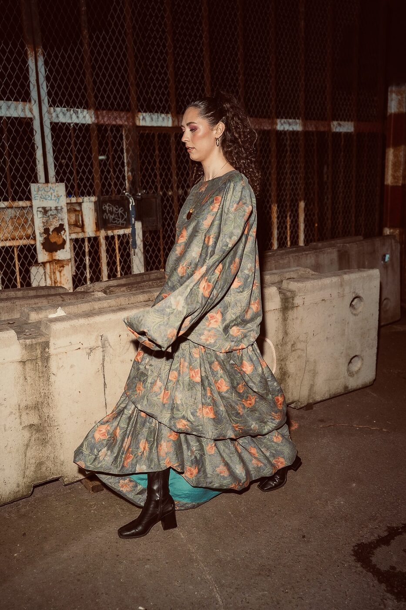
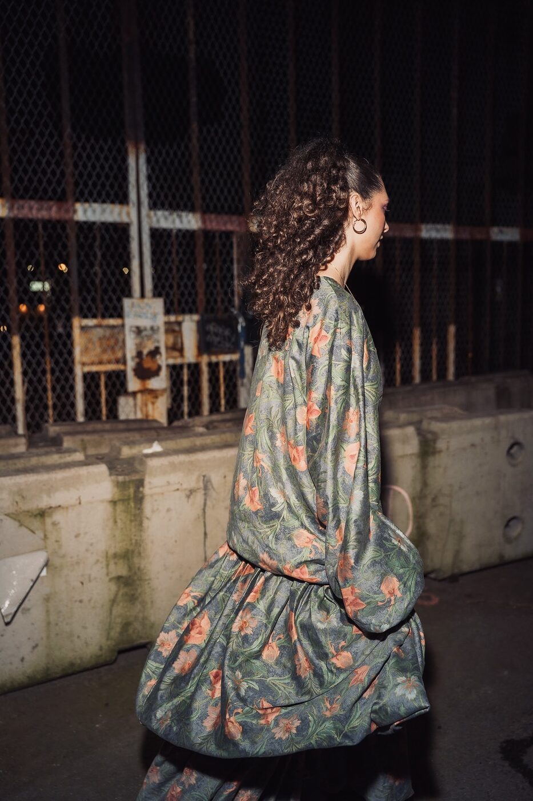
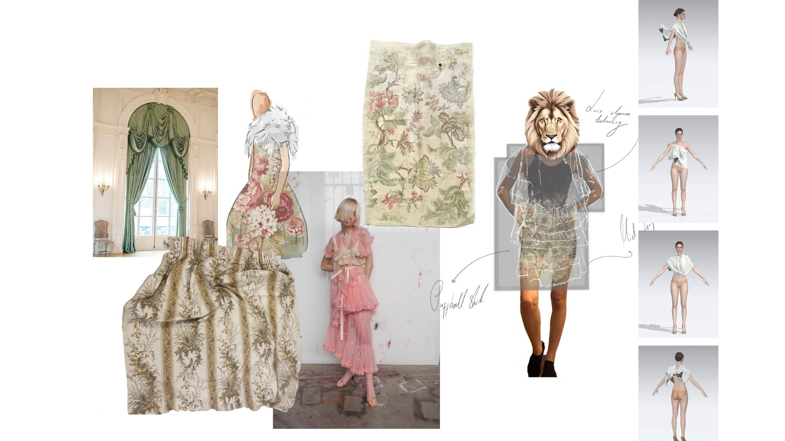
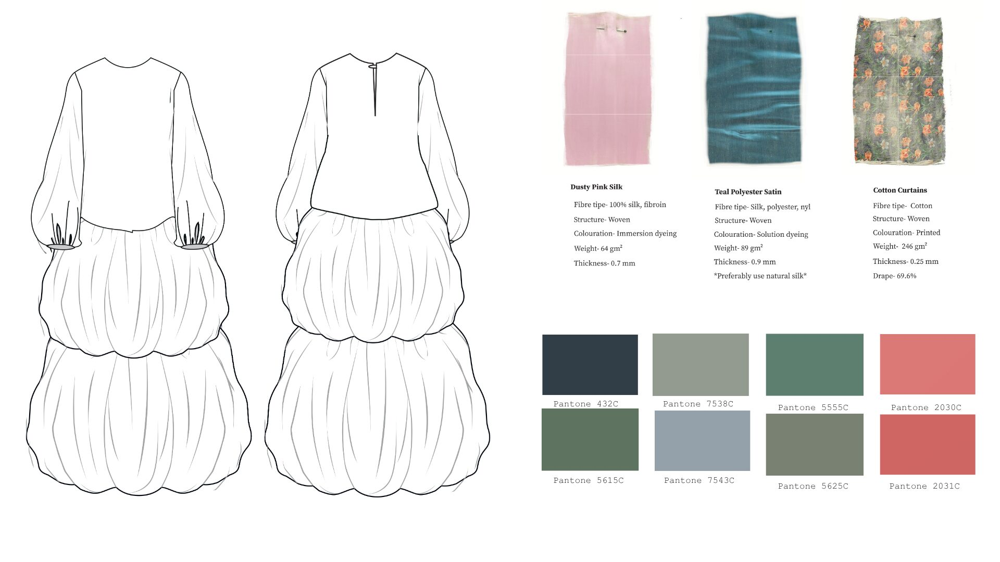
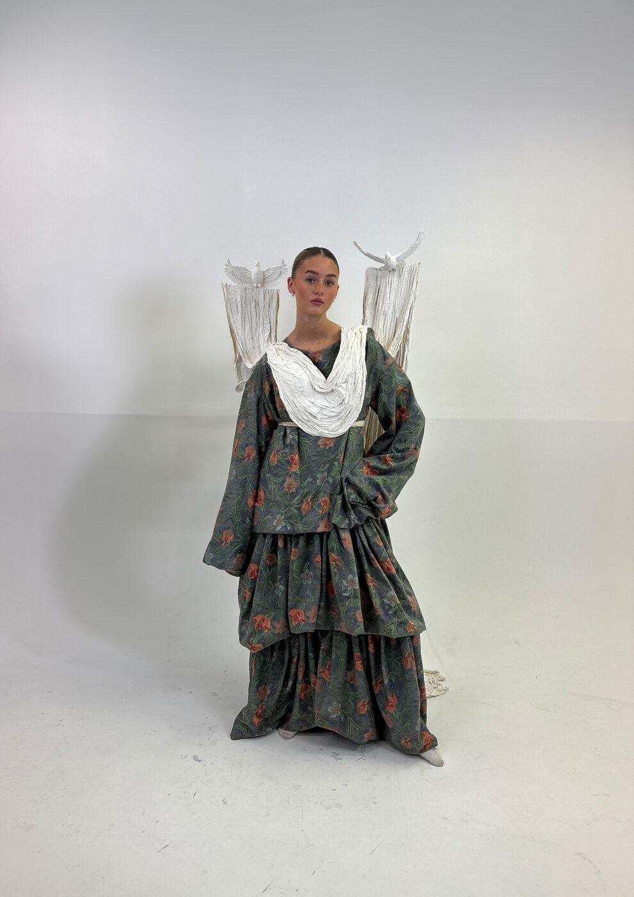
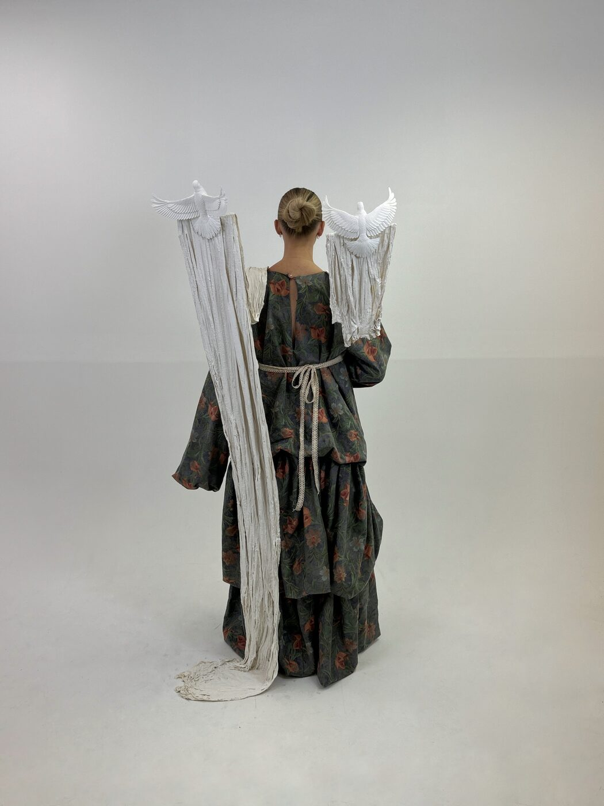

I designed and constructed a dress inspired by Familiar Spaces. The garment is made from second-hand curtains and silk lining, combining domestic materials with a refined finish.
I 3D-printed two doves using recycled plastic, and created the accessories by applying Jesmonite over draped muslin.





